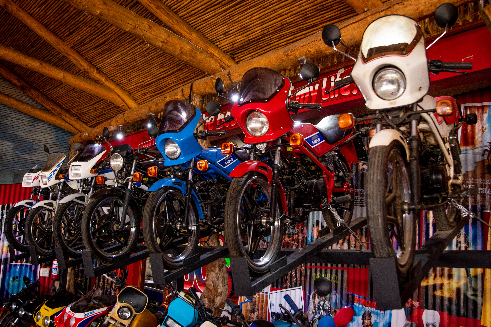

This project aims to create a function named calculate() in mean_var_std.py that uses Numpy to output the mean, variance, standard deviation, max, min, and sum of the rows, columns, and elements in a 3 x 3 matrix.
Demographic Data Analyzer

We will use replit to do this project.In this project, we analyze demographic data using Pandas. We use a dataset of demographic data that was extracted from the 1994 Census database.
In this we will dive into the data to draw deep insight of the data.
In this project, we will visualize and make calculations from medical examination data using matplotlib, seaborn, and pandas. The dataset values were collected during medical examinations.
We will use the dataset to explore the relationship between cardiac disease, body measurements, blood markers, and lifestyle choices.
For this project we will visualize time series data using a line chart, bar chart, and box plots.
We use Pandas, Matplotlib, and Seaborn to visualize a dataset containing the number of page views each day on the freeCodeCamp.org forum from 2016-05-09 to 2019-12-03.
The data visualizations will help you understand the patterns in visits and identify yearly and monthly growth.

We will analyze a dataset of the global average sea level change since 1880.
We will use the data to predict the sea level change through year 2050 using Scipy library of Python.
We will analyze a dataset of the motorbike's sales genderwise, region-wise, and the impact of average salary of people on bike sales.
We will use the commute data to predict the need of motorbikes among people.
We will do this project using MS excel.

We will analyze a dataset of different products' category sales genderwise, region-wise.
In this project we will draw an insight by studying the role of different occupations and marital status of buyers on sales data of an e-commerce website.
We will do this project using Pandas and Seaborn for visualization.